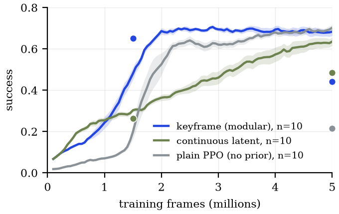
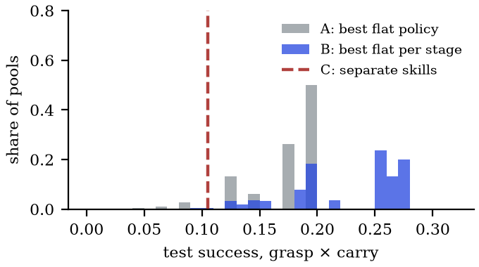

Dexterous manipulation · simulation · registered comparisons · submitted to IEEE Robotics and Automation Letters (manuscript 26-6874)
Modular motion models such as MotionBricks build motion from reusable parts, but earlier work changed the prior, the decision rate, the data and the training procedure at once. We tested each of MotionBricks’ two layers on simulated dexterous hands, changing one thing at a time and registering the main comparisons before running them. Keyframes joined by a learned in-betweener lead a continuous latent that decides at the same rate (0.59 against 0.22 on held-out skill sequences at 1.5 M frames) and reach the training plateau sooner; at 5 M frames the data do not separate the two. At the skill level, choosing the best policy for each stage completes more episodes (97 against 61 of 400); training the skills separately does not (45).
Mu-Hua Wang · National Yang Ming Chiao Tung University · sole author
Everything shown is in simulation. The PDF is the version submitted to RA-L, with the author named. Code and the full registration log will be posted after the review decision.
Same start, three ways to run grasp → carry → carry again (left to right: A, B, C). B, the best flat policy for each stage, finishes all three stages in 3.3 s. A, one flat policy for every stage, grasps the ball but never delivers it; C, separately trained skills, never completes the grasp. This is one test episode, the first on which B finished all three stages, not a statistic: B did so in 47 of 400 test episodes. The counts are below.
Each hand-motion prior became the action space of a PPO policy on a simulated Shadow Hand holding a 5 cm, 0.20 kg cube under a 1.5 g lateral acceleration, every prior deciding once every 16 frames. Policies trained on two-skill sequences and were scored on three-skill sequences they never saw. At 1.5 M frames the keyframe interface succeeded on 0.59 of held-out sequences against the continuous latent’s 0.22 (20 seeds; difference +0.38, 95 % CI 0.23 to 0.52; higher in 17 of 20 seeds; registered). Over the first 2.5 M frames its mean training success was 0.39, against 0.25 for plain PPO and 0.27 for the latent (10 seeds each; higher in every seed pair, exact two-sided Mann–Whitney p = 1.1 × 10−5 for both, post hoc). Because the latent also decides once every 16 frames, the difference is not the decision rate.
held-out success at 1.5 M frames, keyframe vs continuous latent, 20 seeds
in which the keyframe interface led (registered)
at 5 M frames, 10 seeds: inconclusive (difference −0.04, 95 % CI −0.22 to 0.13)

Lines: success on the training sequences, mean and standard error over 10 seeds; the keyframe interface reaches its plateau of 0.69 by 2 M frames. Dots: success on the held-out sequences for the same seeds. At 5 M frames the data do not separate the keyframe interface from the continuous latent on held-out sequences (0.44 against 0.49, inconclusive); it stays above plain PPO (0.44 against 0.22), which also changes the decision rate, since plain PPO decides every frame. On the training sequences the three end within 0.07 of each other.
At 1.5 M frames, on a held-out sequence (hold under a y tilt, hold under an x tilt, release). Left, the keyframe interface holds both tilts and releases; right, the continuous latent loses the cube during the first hold. RL seed 13, whose success is closest to the 20-seed means; the episode is the first evaluation episode (of 100) in which the keyframe policy succeeds and the latent fails, not a statistic. Real time.
On three other objects (a heavier cube, a sphere and a cylinder) the early lead was smaller and not significant (pooled test, p = 0.067).
Motion level · poses joined by a learned in-betweener
The same target poses joined by straight lines never learned to release (0 of 10 seeds), so on this task the learned in-betweener, not the keyframes alone, carries the gain. Not every modular action space helps: a bank of 16 fixed primitives is the weakest learned prior (0.08).
Skill level · units that act, chained
Adroit relocate, extended into grasp the ball, then carry it to a target in the air once or twice, with behaviour cloning from the 25 human demonstrations of D4RL; PPO from scratch never completed a carry. A stage counts as done only after its goal has held for 25 consecutive steps: with a one-step criterion, a carry skill learned to fling the ball through the target (video).
The fling, shown at quarter speed. Under a one-step success criterion, a PPO carry skill learned to throw the ball through the target, at 3.0 to 5.4 m/s at the counted step in these three episodes (median 3.7 m/s over all episodes), leaving an end state the next skill cannot start from. After the counted step the hand is driven to its neutral pose so the ball’s path stays visible. This policy predates the 25-step criterion and is used in no reported result; not a statistic.
A registered test on fresh seeds, with 20 trainings per side and 400 test episodes never used for any choice. A is the best of 20 flat policies, used for every stage. B uses the same 20 flat policies, the best grasper for the grasp and the best carrier for every carry. C trains 10 grasp skills and 10 carry skills separately and chains the best of each. A against B changes only the selection; B against C changes only the training.
| Variant | Grasp, then carry | Grasp, carry, carry again |
|---|---|---|
| A · best flat policy, every stage | 61 / 400 | 12 / 400 |
| B · best flat policy per stage | 97 / 400 | 47 / 400 |
| C · separately trained skills | 45 / 400 | 6 / 400 |
Episodes that completed every stage, of the 400 test episodes. Fisher’s exact test against A: B, p = 0.002 (two stages) and p < 10−5 (three stages); C, p = 0.12 and p = 0.23. The selection pipeline ran once.
Our registered prediction, that separately trained skills beat the best flat policy, failed (45 against 61, p = 0.12), and separate training lost to per-stage selection (45 against 97, p < 10−5). Per stage, C lost at the grasp (0.57 against A’s 0.77). B won through the carry: its carrier completed 0.34 of carries after a grasp, against A’s 0.20.
In this run, the gain comes from per-stage selection, not from training the skills separately.

Not a matter of pool size. B chose from 20 policies per stage and C from 10. A post hoc check, whose analysis plan was fixed before it ran, repeated B’s choice on every pool of 10 flat policies (184 756 of them), scoring each by the product of per-stage test rates. Per-stage selection beat separate training in 99 % of pools (mean 0.23 against 0.10), and in 96 % of 10 000 redrawn pools; it beat whole-policy selection in 82 %. The pools are subsets of the same 20 policies scored on the same test episodes, so this shows the result does not hinge on pool size, not that it replicates.
A chain of modules succeeds with probability ∏ P(module i | end states of module i−1), so the cost of separate modules sits at the hand-offs. We formulated four conditions during the study and offer them as hypotheses, not results. MotionBricks, in animation, plausibly meets all four.
| Condition | Motion level | Skill level |
|---|---|---|
| Solution lies inside the modules | partly — the grip needs 83° of mean finger flexion; the most-flexed grips we measure in OakInk and TACO reach 73–76°; a residual covers the gap | yes — skills learned on the task |
| Clean hand-offs | yes — poses only | only when enforced — a one-step stage lets carry fling the ball |
| Something to amortise | partly — faster exploration, one task | yes — PPO from scratch never carries |
| A flat learner cannot match it | no — plain PPO ends within 0.07 on the training sequences | no — flat policies selected per stage did best |
Scope: everything is in simulation, with one task per layer. The early lead is significant on the cube only (three other objects, p = 0.067), and at 5 M frames the data do not separate the keyframe interface from the continuous latent. All interfaces share one set of PPO settings. The skill-level selection pipeline ran once, with behaviour cloning from 25 demonstrations, and the registered prediction that separately trained skills beat the best flat policy failed. The comparison with plain PPO changes the decision rate as well as the prior. Stronger baselines (learned skill priors, action chunking adapted to RL, terminal-state regularization), interface-specific tuning and repeated selection pipelines are the next steps.